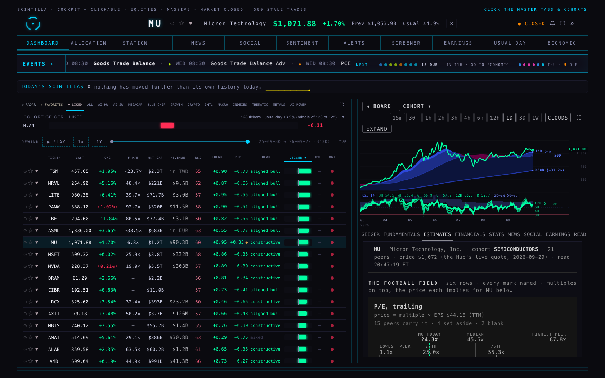
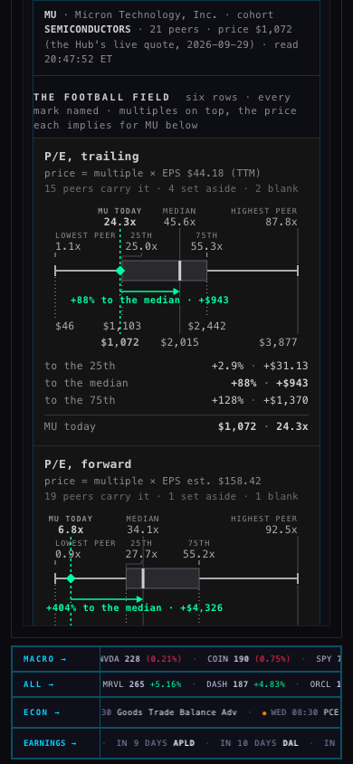


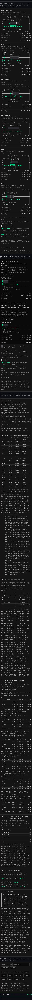


The company view's ESTIMATES tab now carries a COMPS section (02·c), right under the analysts' price target it must never be confused with. For any served company that has a cohort, it draws the six valuation rows the way Alan approved on 28 Sep (every mark named: LOWEST PEER · 25TH · MEDIAN · 75TH · HIGHEST PEER · TICKER TODAY; multiples on top, the price each implies below; a diamond for today; the arrow to the median with the upside in % and $), then way B, the middle-half band across the six rows, as the tranche band, and then the step-by-step: seven numbered steps from the peer set to the price range, every number checkable by eye. Under it, COMPARE puts two or three companies on one axis where today is 0% for each, so upside is upside across companies. Outliers and blanks are named on every row and the band is stated with and without them. The same arithmetic runs in a node script and in the browser, and the tests feed a snapshot in and check the same numbers come out.
The football field. MU trades at $1,072 (the Hub's live quote). Against its 21 SEMICONDUCTORS peers, six rows: P/E trailing (15 peers carry it; MU 24.3x, median 45.6x, so +88% to the median), P/E forward (19 peers; MU 6.8x, median 34.1x), EV/sales (18; MU 11.9x, median 18.4x), EV/EBITDA (16; MU 15.8x, median 38.0x), P/S (18; MU 12.2x, median 18.6x), PEG (20; MU 0.5x, median 1.0x). Each row says how many peers carry it, how many were set aside as not meaningful and how many are blank.
The tranche band (way B). The median of the six rows' 25th-percentile prices is the low edge, the median of the six medians the centre, the median of the six 75ths the high edge: $1,250 – $2,700, centre $2,066. From $1,072 that is +17% to the low edge, +93% to the centre, +152% to the high edge. A second band is drawn directly under it with the outliers set aside (AXTI and SIMO on EV/sales, AXTI on P/S, ARM on PEG): $1,261 – $2,651, centre $2,055, +92%. Both are stated; neither is dropped.
The step-by-step. 1 the peer set (MU, cohort SEMICONDUCTORS, the 21 names as chips, who is excluded and why); 2 a table of every peer's six multiples, with NM (above the cap) and blanks named, each peer's figure dates and price date, and the source; 3 the percentiles per row with who sets the lowest, the median and the highest, plus the sorted peers so a median can be checked by eye; 4 MU's own figure per row (EPS $44.18 as of 20 Sep; EPS estimate FY2027 $158.42; revenue TTM $90.3B and EBITDA TTM $68.3B to 28 May; net cash $18.6B at 28 May; 1,024M shares) and the five lines of arithmetic per row, multiple × figure = price; 5 the six rows' 25th / median / 75th prices in a table and the three sorted lists whose medians are the band; 6 the upside, written out as price ÷ today − 1 and price − today, for the three edges; 7 the sentence: MU at $1,072 sits below the low edge of its peers' band, $1,250 to $2,700 with the centre at $2,066 (+93% to the centre): room on every reading of the peers: the first tranche can be the largest.
Compare. Type one or two tickers or take a quick pick from the cohort. MU vs NVDA vs GEV on one axis: MU +93% (band $1,250 – $2,700), NVDA +48% (today $228; band $210 – $475, centre $338; −8.1% to the low edge, +108% to the high edge; between the low edge and the centre), GEV −10% (today $966; AI_POWERTRAIN, 7 peers; band $594 – $1,245, centre $865; −39% / −10% / +29%; between the centre and the high edge; 5 of 6 rows price it, PEG is blank because no EPS growth is expected). Under the field, one compact column per company (cohort, today, the three edges in $ and %, rows priced, outliers, the sentence) and the whole ladder for each, folded. A line ranks them by the upside to the centre.
| Company | Today | Peers | Low edge | Centre | High edge | To the low edge | To the centre | To the high edge | Without outliers · centre |
|---|---|---|---|---|---|---|---|---|---|
| MU · SEMICONDUCTORS | $1,072 | 21 | $1,250 | $2,066 | $2,700 | +17% | +93% | +152% | $2,055 · +92% |
| NVDA · SEMICONDUCTORS | $228 | 21 | $210 | $338 | $475 | −8.1% | +48% | +108% | changed only by AXTI, ARM · stated on the page |
| GEV · AI_POWERTRAIN | $966 | 7 | $594 | $865 | $1,245 | −39% | −10% | +29% | no outlier (rows have fewer than four peers) |
MU's six rows at the median: P/E $2,015 · P/E fwd $5,398 · EV/S $1,640 · EV/EBITDA $2,554 · P/S $1,636 · PEG $2,117. Sorted: $1,636 · $1,640 · $2,015 · $2,117 · $2,554 · $5,398 → the middle two average to $2,066, the centre. The same for the 25ths ($1,103 · $1,205 · $1,238 · $1,263 · $1,571 · $4,382 → $1,250) and the 75ths ($1,913 · $1,938 · $2,442 · $2,958 · $3,624 · $8,749 → $2,700).






What I saw in them. At 1680: the section mounts inside the ESTIMATES tab under 02·b PT consensus; all six rows are drawn with every mark named; MU TODAY is the green diamond on its dashed line with "+88% to the median · +$943" on the arrow; the tranche band shows LOW EDGE $1,250 / CENTRE $2,066 / HIGH EDGE $2,700 with MU TODAY $1,072 and "+93% to the centre · +$994"; the seven steps follow with their tables; no page error, no chart API failure, no write. At 390: the same, stacked; the box has no sideways scroll except inside the two wide tables, which say so. Compare: three rows on one axis (MU's band reaching +152%, GEV's down to −39%), the ranking line "MU +93% · NVDA +48% · GEV −10%".
ticker_cohorts. The company's cohort is chosen as the round-3 pages chose it (the coordinator's defaults for MU, NVDA, GEV, VST; otherwise the first tag that is not a size tag). The other tags are named in step 1. Funds in the cohort are excluded by name.deliverables/20260927/comps-r3/r3.mjs → compsRead) on the same tables: fundamentals (EPS TTM, revenue TTM, market value and the price on that row → shares), analyst_estimates (this year's and next year's EPS → forward P/E, growth, PEG), fundamentals_history (revenue and EBITDA by quarter, four added up), balance_history (net debt at the newest balance → enterprise value), company_profile (names, fund or not). All of it is FMP data as the Hub stores it. P/S is computed on the same inputs, as on the 28 Sep page./quotes for every name; for the company on screen the Hub's own live quote when it has one (the stamp says which). If the quotes cannot be reached, the fundamentals row's dated price stands in and the stamp says so in red.peerBand, straight-line between the two nearest peers, on the peers left in a row (positive multiples under the caps: P/E 100x, EV/sales and P/S 50x, EV/EBITDA 100x, PEG 10x).middleHalfBand from the approved deliverables/20260928/comps-r3-labels/labels-r3.mjs, unchanged. Ways A and C stay off the page, as decided.deliverables/20260929/comps-live/ladder.mjs (the seven steps, the outlier readings, the compare set — pure), snapshot-live.mjs (the one snapshot-taker used by the browser and by snapshot.mjs on this Mac), draw.mjs (the drawing, ported from the 28 Sep page with every class prefixed), live.mjs (the mount), and in index.html the section estCompsHTML and the hook compsLiveMount. Tests: tests/comps-live.test.mjs (14). Proof script: shots.mjs.hub/comps-live-20260929 from live 9330845.prototypes/indicator-lab/, lab.html or INDICATOR_LAB/.